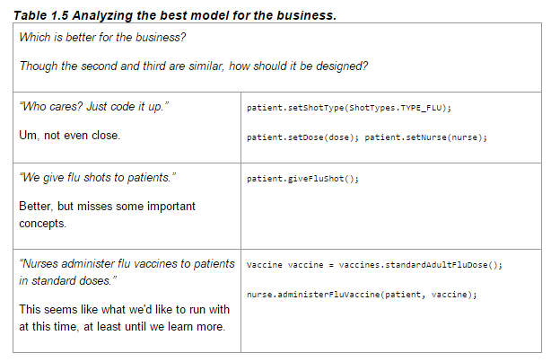

DDD is like a design pattern (concept written by Eric Evans 2003) where the application is designed around the domain rather than the software. The main layers are presentation(GUI UI), Application, Domain, Infrastructure.
One way to start thinking of ddd, is that if a bounded context, if stripped apart and brought into another ddd application, it should be able to adapt easily.
The domain experts can help you come up with the best design model approach
Domain is the software you are designing for. For example, Deck is the domain object if you are building an app to purchase a deck.
Acts like the business action. When implementing code to change a customer name, refactor out the code so it only does that and nothing else